O portal do parceiro, do primeiro clique ao fechamento
O que mostrar, o que dizer e o que não prometer, para clínicas veterinárias, hotéis e
creches, e as demais empresas da rede.
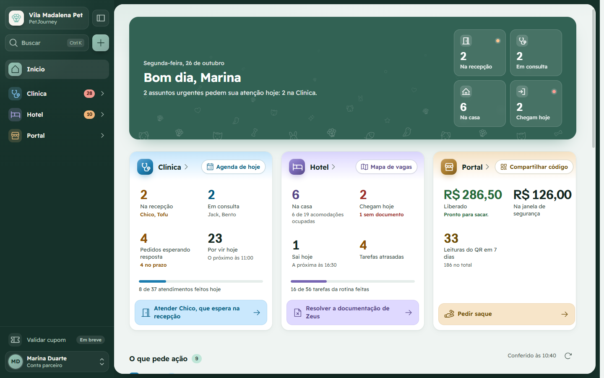
Para quemQuem apresenta o portal a uma empresa
Duração15 a 30 minutos, conforme o percurso
ConferidoNo sistema em 26 de outubro de 2026
Como usar este roteiro
Este documento fica na sua mão, não na parede. Leia uma vez antes da reunião e deixe
aberto ao lado do computador. Cada ato é uma tela, na ordem em que ela aparece.
Três partes
Um tronco comum, de 10 minutos, que serve a qualquer empresa: a entrada, o
Início e as duas coisas que ligam o parceiro ao dono do animal: o acesso ao histórico do
pet e a indicação.
Um percurso por tipo de empresa: Clínica (20 min), Hotel e creche (15 min) ou
Rede, para pet shop, banho e tosa, adestramento e farmácia (5 min).
O apoio: o fecho, as perguntas que o cliente faz, o que é real e o que é
demonstração, o plano B e uma cola com endereços e nomes.
Como ler cada ato
Passos numeradosO que fazer na tela, na ordem.
FaleSugestão de fala. A ideia importa; a frase, não.
Por que isso vendeO argumento, para você. Não é para dizer.
AtençãoO que atrapalha a demonstração se ninguém cuidar.
O portal tem duas naturezas, e o cliente precisa ouvir isso de você.
Portal do parceiro (Início, Programas, Divulgação, Acessos, Ganhos):
funciona de verdade, ligado ao servidor e à conta da empresa. Os números são da
conta.
Clínica e Hotel: protótipos navegáveis com dados de demonstração. As
telas funcionam, mas nada é gravado em servidor, e recarregar a página recria tudo. Os
números dessas telas são de exemplo: nunca os apresente como resultado.
Diga isso no começo, numa frase. Quem descobre sozinho no meio da reunião passa o resto
dela desconfiando de tudo.
As capturas deste roteiro saíram do sistema rodando em 26/10/2026. As do Portal usam uma
empresa de exemplo, a Vila Madalena Pet: na sua conta, os números serão outros.
Escolha o percurso
Antes da reunião, descubra o que a empresa faz e marque o percurso. O tronco vale para
todas; o resto depende do negócio.
● ato inteiro · ○ versão curta, uma tela e uma frase. A
visão geral é para quem quer ver o produto sem operar nenhum módulo: indústria,
investidor, rede de franquias. Empresa com clínica e hotel: tronco, Clínica inteira
e só H1, H3 e H5 do Hotel; tudo passa de 35 minutos.
Ato
Tela
Tempo
Clínica
Hotel e creche
Rede
Visão geral
Tronco comum
0
A promessa, sem tela
30 s
●
●
●
●
1
A entrada
1 min
●
●
●
●
2
O Início
2 min
●
●
●
●
3
Acessos: o histórico que viaja com o pet
3 min
●
●
●
●
4
Divulgação e ganhos
3 min
●
●
●
●
Percurso Clínica
C1
Hoje na clínica
1 min
●
●
C2
A agenda
2 min 30 s
●
○
C3
Agendamento online
2 min
●
C4
O atendimento
5 min
●
○
C5
A receita e os documentos
2 min
●
C6
O pet em 30 segundos e a carteirinha
2 min
●
C7
Internação
2 min
●
C8
Pendências que viram faturamento
2 min
●
C9
Relatórios e a base que vem junto
2 min
●
Percurso Hotel e creche
H1
Painel do dia
1 min 30 s
●
●
H2
A rotina do turno
2 min
●
H3
A proposta de rotina
2 min
●
○
H4
A estadia
2 min 30 s
●
H5
Vender uma vaga
2 min 30 s
●
H6
Reserva online
2 min
●
H7
Relatórios
1 min
●
Percurso Rede
R1
Programas
1 min 30 s
●
R2
A anotação de banho e tosa
2 min
●
R3
O que vem: cupom
30 s
●
Para todos
F
O fecho
1 min
●
●
●
●
Total aproximado
30 min
25 min
15 min
20 min
Antes de entrar na sala
Quinze minutos de preparação evitam os três jeitos mais comuns de a demonstração começar
mal: o menu sem Clínica e Hotel, as telas vazias e o Portal sem dados.
1 · A conta
Entre com a conta de demonstração da empresa, com o cadastro aprovado e o
Programa de Afiliados ativo. Uma conta nova abre Divulgação e Ganhos em "Programa
afiliado necessário", e o Início sem números no bloco do Portal.
2 · Um pet compartilhado
Acessos só tem o que mostrar se um dono de animal compartilhou um pet com a empresa. Na
véspera, pelo app de teste, compartilhe um pet por 7 dias, com alergias, vacinas,
um documento e o diário. Acesso vence e sai da lista. Se for mostrar o
Vincular código ao vivo, deixe o app aberto no celular.
3 · Os módulos Clínica e Hotel
Eles nascem escondidos. Acrescente ?clinico=on&hotel=on ao
endereço de qualquer tela e confira que Clínica e Hotel apareceram no
menu. (Digitar clinico ou hotel fora de um campo de texto também liga, e
desliga se já estiver ligado. Nunca faça isso na Agenda: lá a letra n abre um
atendimento novo.)
4 · O horário
Os dados de demonstração andam com o relógio, fixo em UTC−4 (o horário de
Campo Grande, Cuiabá e Manaus; em Brasília, uma hora a mais). Para a clínica e o hotel
estarem em plena manhã:
Dia útil, com a página carregada entre 9h e 15h30 no relógio da
demonstração (10h e 16h30 em Brasília).
Sábado: Hoje e Agenda abrem sem nenhum caso preparado. Domingo: a clínica
está fechada e as telas abrem vazias. Não apresente no fim de semana.
À noite: a recepção mostra centenas de minutos de espera, e a rotina do hotel
abre em "nada para agora".
5 · Uma janela limpa, carregada na hora
Use uma janela anônima (InPrivate) nova. Rascunhos e receitas assinadas em
apresentações anteriores ficam guardados no navegador e reaparecem.
Carregue a página pouco antes de começar e não recarregue durante:
os dados de demonstração nascem a cada carga, e o que você fez some. Navegue pelo menu,
não pela barra de endereço. Trabalhe numa aba só.
Abra uma vez o Gravar consulta de um prontuário e escolha
Consulta de demonstração em Ouvir. A escolha fica
lembrada, e a voz não depende do microfone da sala.
6 · A tela
1280 px de largura ou mais, zoom em 100%, tema claro (projetor lava o escuro).
Feche notificações e o WhatsApp Web: Enviar no WhatsApp abre o
WhatsApp de verdade.
Checklist
Conta de demonstração, cadastro aprovado e afiliado ativo
Um pet compartilhado com a empresa, vencendo daqui a dias
Clínica e Hotel aparecendo no menu
Dia útil, entre 9h e 15h30 do relógio da demonstração
Janela anônima nova, página carregada há poucos minutos
"Consulta de demonstração" escolhida no Gravar consulta
Tema claro, zoom 100%, notificações e WhatsApp Web fechados
Este roteiro aberto no percurso da empresa
Para todas as empresas
Tronco comum
Dez minutos que servem a qualquer negócio. Terminam nas duas coisas que só o PetJourney
tem: o histórico do pet que o dono compartilha com a empresa, e o cliente que a empresa
traz para o app e que rende para ela.
0 · A promessa30 s
1 · A entrada1 min
2 · O Início2 min
3 · Acessos3 min
4 · Divulgação e ganhos3 min
0
A promessa
antes de abrir qualquer tela30 s
Não abra nada ainda. Olhe para a pessoa, não para o projetor, e diga do que se trata.
Hoje o dia de vocês está espalhado: a agenda num lugar, a ficha no papel ou numa planilha,
a conversa com o dono do animal no WhatsApp. O que eu vou mostrar é isso num lugar só,
ligado ao aplicativo que o dono do pet já usa no celular.
Por que isso vende. A plateia precisa saber o que vai ver. Sem essa frase, os dois
primeiros minutos se perdem em adivinhação.
Ajuste a frase ao negócio. Clínica: "da recepção à receita no celular de quem
trouxe o animal". Hotel: "do pedido de reserva à saída do animal, com tudo registrado".
Pet shop e banho e tosa: "do cliente que vocês trazem ao histórico do pet que vocês
recebem".
1
A entrada
/auth/login1 min
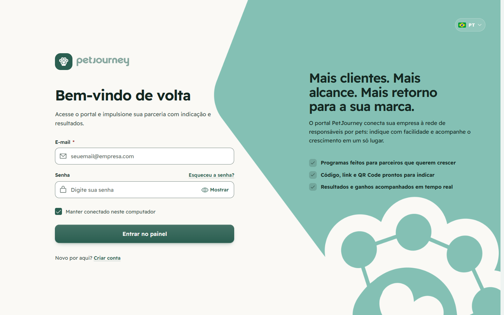
A entrada, com a promessa da marca à direita.
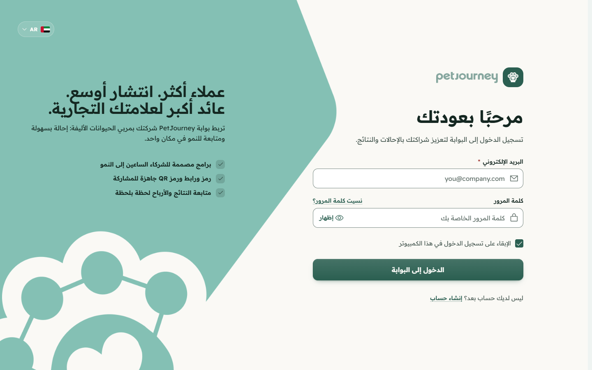
A mesma tela em árabe: a página inteira espelha.
Deixe a entrada aberta antes de a pessoa sentar. Aponte a frase da direita:
Mais clientes. Mais alcance. Mais retorno para a sua marca.
Abra o seletor de idioma no canto e escolha AR. A tela espelha. Volte para
PT.
Entre com a conta de demonstração.
O portal fala seis línguas: português, inglês, inglês britânico, espanhol, sérvio e árabe,
que lê da direita para a esquerda. Não é tradução de enfeite: a tela inteira se reorganiza.
Por que isso vende. Para rede, franquia ou empresa com operação fora do Brasil, é a
prova de que o produto nasceu para isso. Para os demais, vinte segundos e siga.
Não demonstre o cadastro. Criar conta tem duas etapas e o credenciamento da empresa
é analisado pela equipe PetJourney. É conversa para o fim, como próximo passo.
2
O Início
/inicio2 min
A saudação com a frase de estado, os números do momento e um bloco por área, cada um com
o próximo passo no rodapé.
Leia a saudação e a frase de estado: 2 assuntos urgentes pedem sua atenção hoje.
Aponte os três blocos, Clínica, Hotel e Portal, cada um com os
números do momento e o próximo passo no rodapé (Atender Chico, que espera na
recepção; Pedir saque).
Desça até O que pede ação: a lista única do que está atrasado em todas as áreas.
Cada linha leva à tela onde se resolve.
Opcional: menu da conta (canto inferior esquerdo) → Tema escuro.
Mostre e volte ao claro.
Esta é a primeira tela de quem chega. Ela não mostra tudo: mostra o que pede ação agora e
por onde começar. Se a empresa só usa a indicação, aparece só o bloco do Portal. O menu
mostra só o que o perfil usa.
Por que isso vende. O dono do negócio quer saber "como estamos hoje" em cinco
segundos. É a tela que ele vai abrir todo dia.
Os números da Clínica e do Hotel são de demonstração e mudam com a hora. Não leia
como resultado. Os do Portal vêm da sua conta.
3
Acessos: o histórico que viaja com o pet
/parceiro/acessos3 min
Antes da tela, a cena. No app, o dono do animal escolhe o pet, o serviço, a empresa,
por quanto tempo e o que mostrar: alergias, vacinas, remédios, diário, documentos. O app
gera um código de seis dígitos, que ele passa no balcão ou pelo WhatsApp.
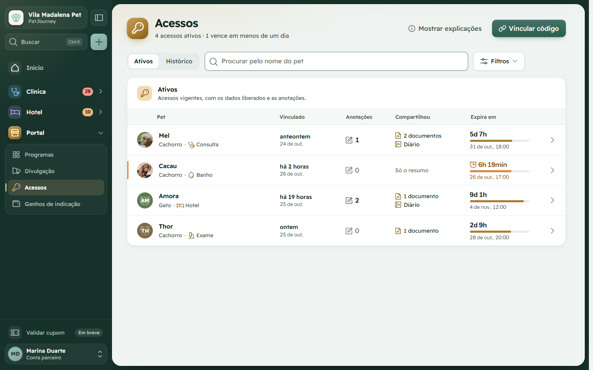
Um pet por linha: o serviço, o que o dono compartilhou e quanto tempo falta. A barra de
"Expira em" esvazia; abaixo de um dia, fica âmbar.
Abra Portal → Acessos. Mostre a lista: um pet por linha, o que cada dono
compartilhou (Só o resumo, documentos, Diário) e a barra de
Expira em.
Se tiver o app no celular, gere um código ali e clique em
Vincular código: o acesso aparece na hora. É o momento mais
forte do tronco.
Abra um pet (na próxima página, a Mel).
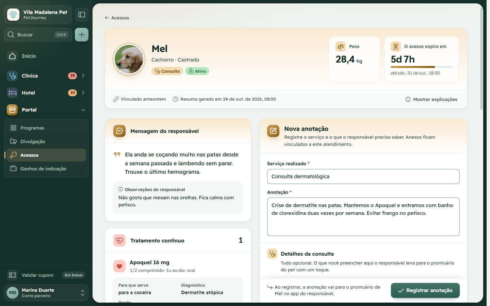
À esquerda, o que o dono trouxe: a mensagem dele, o tratamento contínuo com a posologia,
alergias, vacinas, documentos e diário. À direita, a anotação que volta para o app.
À esquerda, leia a mensagem do responsável e o tratamento contínuo. Desça:
alergias, vacinas, documentos (Abrir,
Baixar) e o diário.
À direita, em Nova anotação, mostre que os campos mudam com o serviço. Consulta:
motivo, diagnóstico, peso, prescrição, exames. Banho e tosa: produtos, pele e pelo,
comportamento. Hotel: entrada, saída, alimentação, intercorrências.
Aponte o rodapé: Ao registrar, a anotação vai para o prontuário de Mel no app do
responsável.
Em consulta, mostre Ler receita com IA: a foto da receita
vira a lista de remédios para conferir, com Confira onde a leitura teve dúvida.
Quem decide o que vocês veem é o dono do animal, e por quanto tempo. Ele pode tirar a
permissão quando quiser. Em troca, o que vocês anotam volta para o histórico do pet no
celular dele. O pet chega com a história e sai com a história atualizada.
Por que isso vende. Vale para todo tipo de empresa: o banho e tosa sabe da alergia
antes do shampoo, o hotel sabe do remédio de uso contínuo, a clínica recebe o hemograma sem
pedir de novo.
Privacidade é argumento, use. A lista nunca mostra dado do dono do animal, só do
pet, e a busca só procura pelo nome do pet. É de propósito.
Ler receita com IA só aparece quando o serviço é consulta.
Acesso encerrado não mostra mais o resumo: só as anotações já feitas.
4
Divulgação e ganhos
/parceiro/divulgacao · /parceiro/carteira3 min
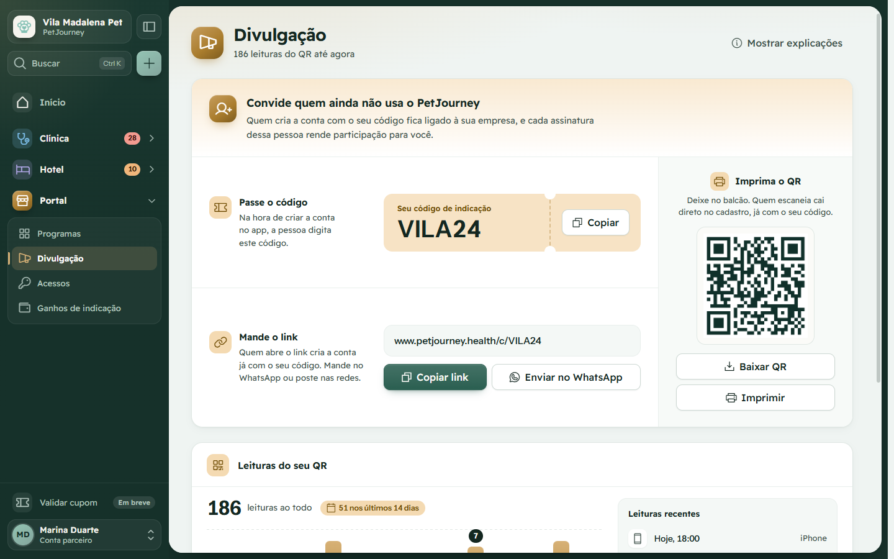
Três jeitos de convidar: o código, o link com mensagem pronta para o WhatsApp e o QR para
o balcão. Abaixo, as leituras do QR.
Portal → Divulgação. Mostre os três jeitos de convidar: passar o código, mandar o
link (Enviar no WhatsApp já traz a mensagem pronta) e
imprimir o QR para o balcão.
Desça até Leituras do seu QR: quantas pessoas escanearam, dia a dia, e de que
aparelho. Sem endereço de IP, por respeito à LGPD.
Abra Como indicar rende: 5% de cada assinatura indicada, todo mês, por 18 meses.
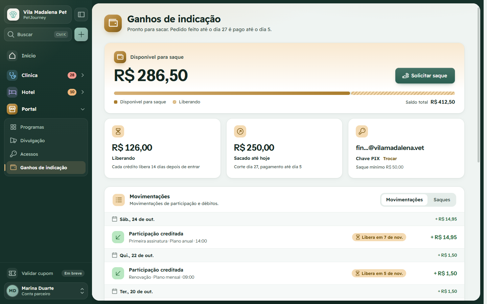
O saldo disponível para saque, o que ainda está liberando (14 dias por crédito) e cada
participação creditada, com a data em que libera.
Portal → Ganhos de indicação. Mostre Disponível para saque,
Liberando (cada crédito libera 14 dias depois de entrar), a chave PIX e
Solicitar saque, a partir de R$ 50.
Em Movimentações, cada participação creditada diz de onde veio (primeira
assinatura, renovação; plano mensal ou anual) e quando libera.
Todo cliente que vocês trazem para o aplicativo fica ligado à empresa de vocês. Cada
assinatura dele rende 5% para vocês, a cada renovação, por 18 meses. O QR fica no balcão,
o link vai no WhatsApp, e aqui vocês acompanham quanto entrou e quando libera.
Por que isso vende. É a única tela que fala de dinheiro entrando. Para pet shop e
banho e tosa, costuma ser o motivo da reunião.
Diga "participação", nunca "comissão": é o termo do produto.
Conta sem movimento mostra zero. Fale do mecanismo, não do número.
Só o dono da empresa cadastra o PIX e pede saque. A equipe acompanha.
Pedido feito até o dia 27 é pago até o dia 5 do mês seguinte.
Para clínica veterinária · cerca de 20 minutos
Percurso Clínica
A história é um dia de trabalho: a recepção abre, a agenda enche, a consulta vira receita
no celular do dono do animal, e a clínica descobre quem chamar de volta. Lembre: é
protótipo com dados de demonstração.
C1 · Hoje na clínica1 min
C2 · A agenda2 min 30 s
C3 · Agendamento online2 min
C4 · O atendimento5 min
C5 · A receita e os documentos2 min
C6 · O pet em 30 segundos2 min
C7 · Internação2 min
C8 · Pendências que viram faturamento2 min
C9 · Relatórios e a base que vem junto2 min
C1
Hoje na clínica
/veterinario/meu-dia1 min
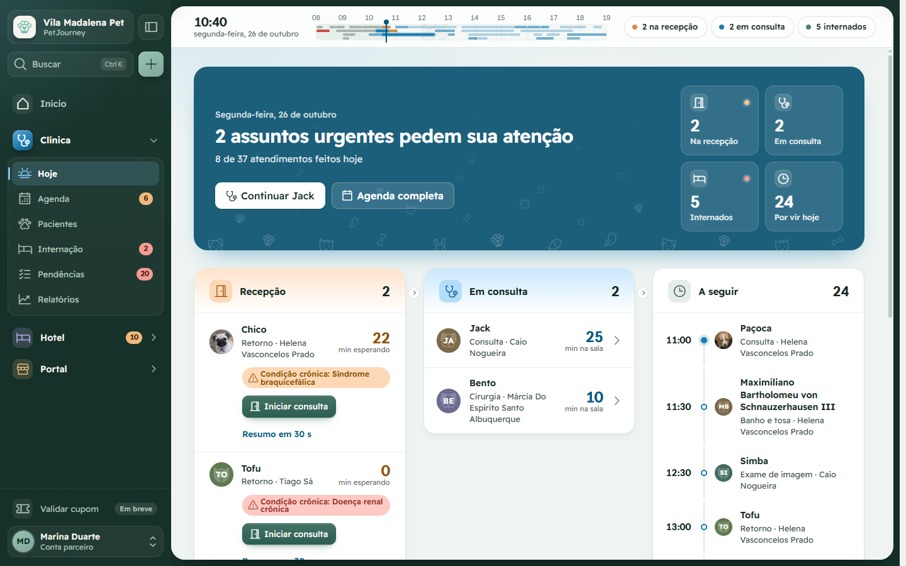
A fita do dia no alto, a frase do momento e três colunas: quem espera, quem está em
consulta e quem vem a seguir.
Clínica → Hoje. Leia a frase: 2 assuntos urgentes pedem sua atenção e
8 de 37 atendimentos feitos hoje.
Aponte as três colunas: Recepção (quem espera, há quantos minutos, com a condição
crônica em destaque), Em consulta e A seguir.
Aponte a fita do dia, no alto: o dia inteiro numa faixa, com a marca de agora e os
contadores de recepção, consulta e internados.
Antes de abrir qualquer ficha, a clínica sabe onde está: quem chegou, quem está lá dentro e
quem vem depois. É a tela que a recepção deixa aberta o dia todo.
Não clique em "Continuar {pet}" esperando uma consulta pronta. Ele abre o
prontuário em branco, e o status do paciente não muda nesta tela. A consulta preparada para
a demonstração é a da Nina, no ato C4.
C2
A agenda
/veterinario/agenda2 min 30 s
É o coração da demonstração e onde a clínica decide se troca de sistema. Vá devagar.
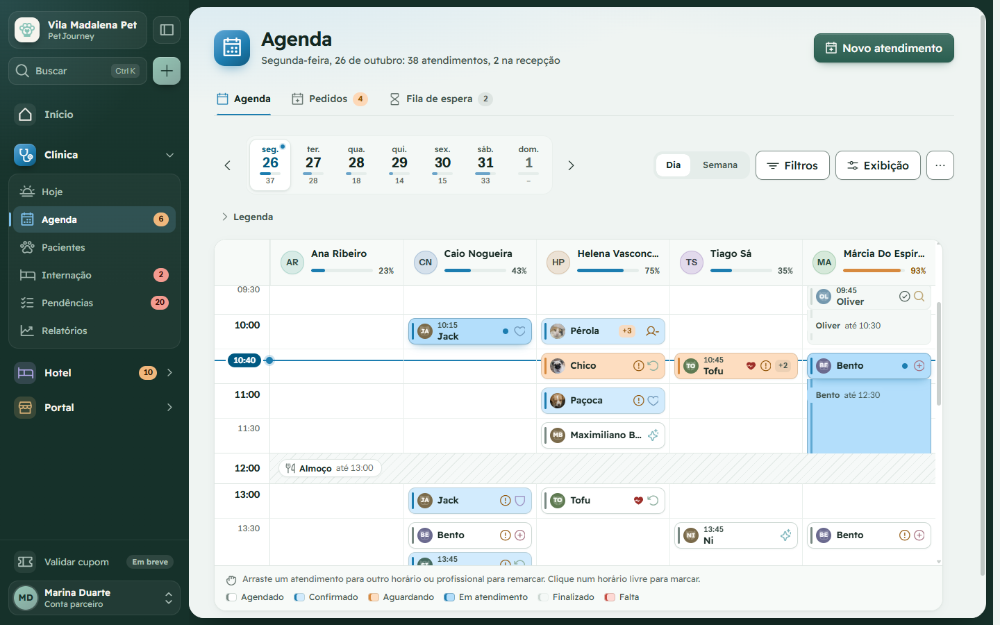
Uma coluna por profissional, com a ocupação de cada um, a linha do agora, o almoço e os
ícones de estado em cada atendimento.
Mostre o dia por profissional, a linha do agora e a Legenda: cada estado tem cor e nome.
Arraste um atendimento para outro horário. Abre Confirmar remarcação: de →
para, os avisos e a mensagem que sai para o responsável, editável. Remarque e aponte o
Desfazer, que fica 8 segundos na tela.
Clique no Thor das 16:20 (encaixe): o painel lateral mostra o conflito
Invade um bloqueio de… por N min. O sistema avisa; não proíbe.
Marque uma falta num atendimento que já começou (Pérola, Chico, Paçoca ou Amora):
abre a justificativa e o reagendamento, com horários sugeridos.
Alterne Dia e Semana e, em Exibição, agrupe por sala.
Arrastar não salva sozinho: toda mudança mostra o que muda e o que o responsável vai
receber. E a falta vira uma ligação de trinta segundos, com horário novo sugerido, não uma
linha num relatório.
Por que isso vende. O medo número um de quem troca de sistema é bagunçar a agenda.
Pergunte quantas faltas eles têm por semana: a conta se faz sozinha.
Atenção.
A mensagem ao responsável fica como comprovante em Avisos enviados; nada sai por SMS ou app.
Atendimentos cancelados nascem ocultos; o interruptor está em Exibição.
Na segunda-feira, para a falta oferecer a vaga a alguém da fila, antes vá a
Fila de espera e registre a recusa da Brunilda.
Em tablet, o arraste por toque pode falhar: remarque pelo painel lateral.
C3
Agendamento online
/veterinario/pedidos · /agendar/petjourney-vila-madalena2 min
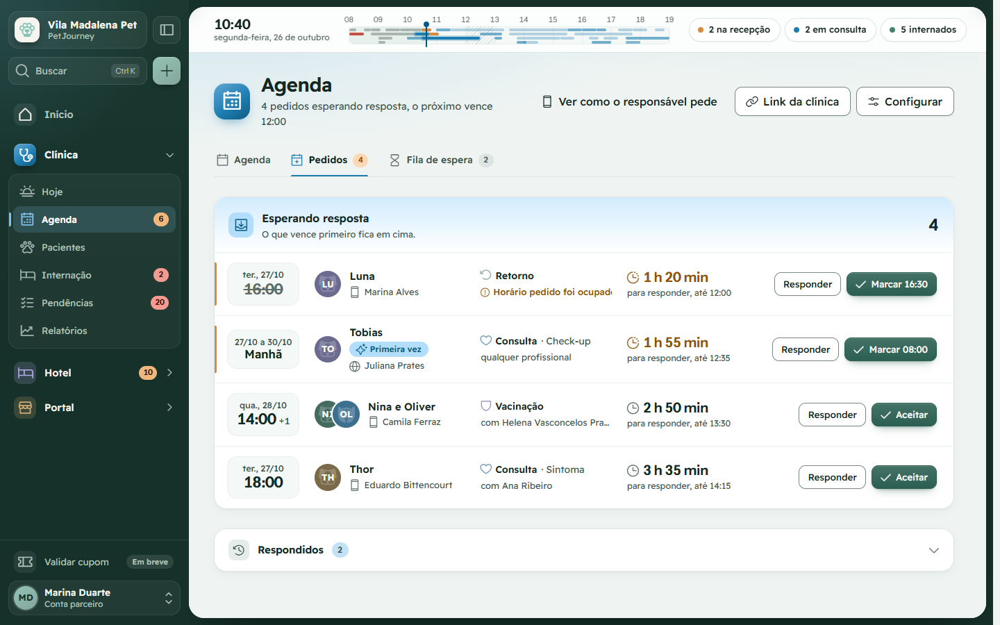
Os pedidos do app e do link, ordenados pelo prazo de resposta. Na Luna, o horário pedido
foi ocupado, e o botão já sugere outro.
Agenda → Pedidos. Os pedidos chegam pelo app e pelo link da clínica, em ordem de
prazo. Aponte a Luna: Horário pedido foi ocupado, e o botão já oferece outro.
Aceitar no Thor: o atendimento nasce na agenda com o ícone de celular.
Link da clínica → Abrir a página,
na mesma aba. É a página pública, sem login e sem app (próxima página).
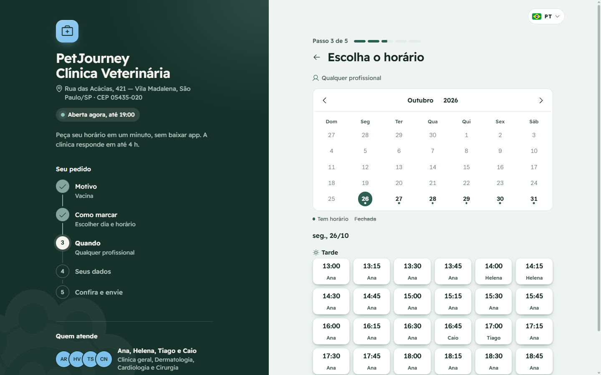
A página pública: o dono escolhe o motivo, como marcar e o horário, que fica segurado por
5 minutos enquanto ele preenche os dados.
Faça um pedido: motivo, como marcar, horário, dados, confirmar.
Voltar ao portal: o pedido está na caixa, com o selo
Primeira vez.
Opcional: Ver como o responsável pede abre um celular
simulado, com o lado do app.
O dono do animal pede horário pelo aplicativo ou por um link que vocês colocam no
Instagram e no Google. Vocês respondem daqui, dentro do prazo, e quem é novo já entra
cadastrado.
Por que isso vende. Agenda que enche fora do horário, sem recepcionista ao telefone.
Abra a página pelo botão, na mesma aba. Em outra aba, ou depois de recarregar, o
pedido não chega à caixa. Emergência não vira pedido: a página mostra o telefone, o
WhatsApp e como chegar.
C4
O atendimento
/veterinario/atendimento/enc-apt-alergia5 min
O trecho mais longo, e o que justifica o produto. Use a Nina, que já está no meio da
consulta. Para abrir: Pacientes → Atendimentos → Continuar rascunho de Nina, ou a
linha Nina às 16:00 em O que pede ação, no Hoje.
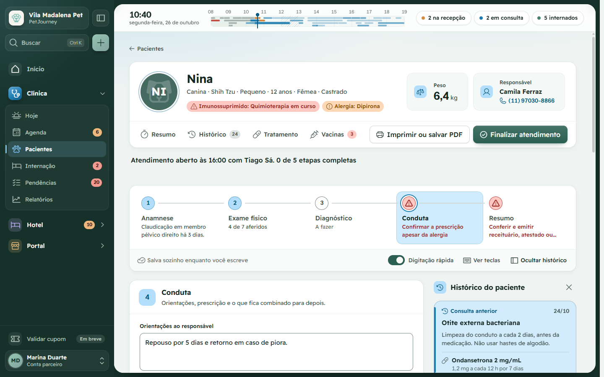
Imunossupressão e alergia à dipirona no cabeçalho, sem clicar. As cinco etapas dizem onde
a consulta está, e onde há alerta.
Cabeçalho: Imunossuprimido: Quimioterapia em curso e Alergia:
Dipirona aparecem sem clicar. As cinco etapas mostram onde a consulta está.
Anamnese: Gravar consulta → Consulta de
demonstração → autorização do responsável. A conversa vira campos, cada um com o
trecho de onde saiu (Ver na conversa). Nada entra sem você marcar:
Aplicar N campos ao prontuário.
Exame físico: valor fora da faixa de espécie, porte e idade aparece marcado, com
a faixa ao lado.
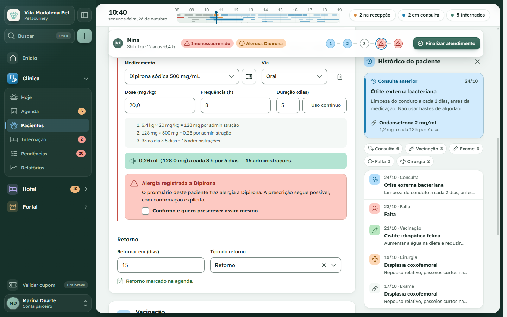
A conta da dose aberta, passo a passo, e o alerta de alergia logo abaixo, pedindo
confirmação explícita.
Conduta: a dipirona prescrita mostra a conta aberta. 6,4 kg × 20 mg/kg = 128 mg;
128 mg ÷ 500 mg/mL = 0,26 mL; a cada 8 h por 5 dias, 15 administrações.
Logo abaixo, Alergia registrada a Dipirona: a prescrição segue possível, com
Confirmo e quero prescrever assim mesmo.
Ver teclas: com a digitação rápida, a consulta inteira anda
pelo teclado. O Enter avança de campo e de etapa.
A conta aparece porque o veterinário confere de cabeça; número pronto num campo ninguém
confere. E a alergia não bloqueia: quem decide é o profissional. O sistema só garante que
ele viu.
Por que isso vende. É a demonstração mais técnica e a que convence veterinário.
Sistema que bloqueia é sistema que o profissional aprende a contornar.
Sobre a voz, diga a verdade. Chame de "escuta assistida". Hoje ela roda com uma
consulta de demonstração e um motor de regras local, não com um modelo de IA, e mostra o
desenho do fluxo: ouvir, sugerir, citar a fonte, o profissional aprovar.
Não recarregue o prontuário. Depois de uma recarga, o endereço dele dá "Não foi
possível carregar": volte pela lista de Atendimentos. Se perguntarem do app, abra a
Amora (pré-consulta das 15:30): o bloco Respondido no app traz
Usar respostas, que só preenche o que está vazio.
C5
A receita e os documentos
mesma tela, fim da Conduta e etapa Resumo2 min
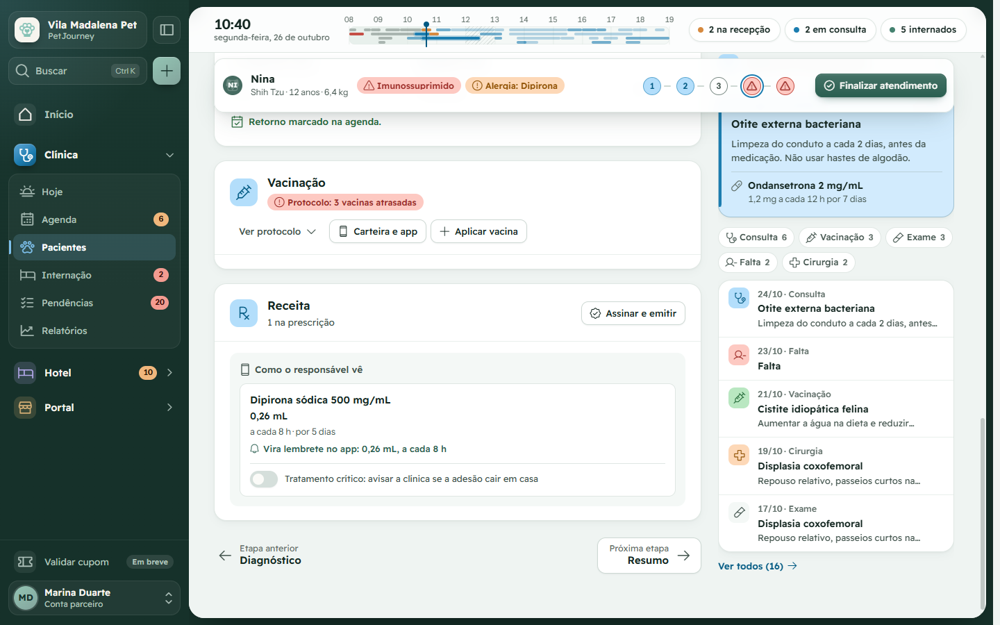
A mesma prescrição em linguagem de casa e o lembrete que nasce dela no app. Acima, a
vacinação atrasada, com a carteirinha do app a um clique.
No bloco Receita, mostre Como o responsável vê: 0,26 mL, a cada 8 h,
por 5 dias e Vira lembrete no app.
O interruptor Tratamento crítico avisa a clínica se o remédio parar de ser dado em
casa (ato C8).
Assinar e emitir: sai o código de verificação, o CRMV e a
validade de 30 dias. Depois, Enviar ao responsável.
Etapa Resumo: os documentos sugeridos para este atendimento e
Outros documentos, 15 modelos em A4 (atestado, termos, encaminhamento, orçamento).
Finalizar atendimento volta à agenda.
É aqui que o elo aparece: a mesma receita vai para o aplicativo de quem trouxe o animal,
em linguagem de casa, e vira lembrete no horário certo. Ninguém digita duas vezes.
Por que isso vende. É o diferencial que os sistemas de clínica não têm. Guarde-o
para depois que a plateia entendeu a consulta.
O que ainda é forma.
Enviar ao responsável registra a data; a entrega pelo app ainda não está ligada.
O código de verificação é provisório; virará assinatura digital. O receituário impresso ainda não traz código nem assinatura.
Confirme a alergia antes de assinar: o sistema deixa assinar sem a confirmação, e não é o exemplo que você quer dar.
C6
O pet em 30 segundos e a carteirinha
/veterinario/paciente/pet-perola/resumo · …/vacinas2 min
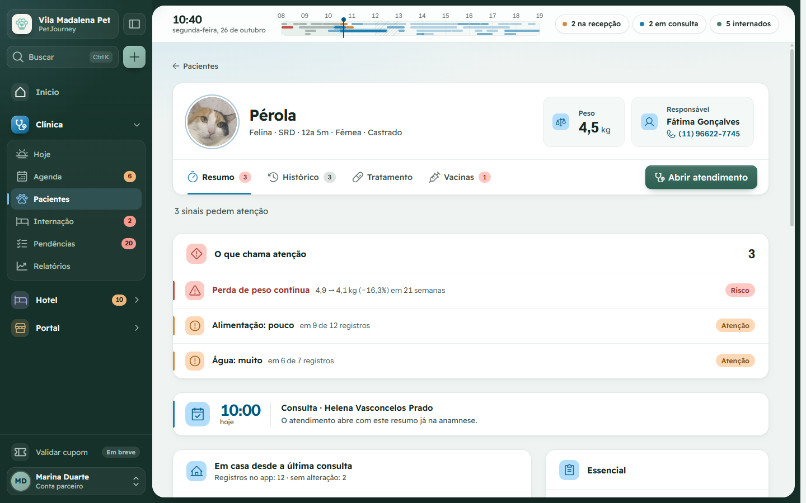
A Pérola tem consulta às 10:00, marcada pelo app. O resumo junta o que a responsável
anotou em casa: três sinais, e a perda de peso em primeiro.
Abra a Pérola. O Resumo mostra três sinais: perda de peso contínua (4,9 →
4,1 kg em 21 semanas), comendo pouco, bebendo muito. Vêm do diário que a responsável
preenche no app.
Abrir atendimento: o prontuário abre com a anamnese já
preenchida pelo diário.
Aba Vacinas: antirrábica atrasada há 16 dias. Carteirinha no
app mostra o que o celular da Fátima vê. Aplicar agora
→ Aplicar e registrar: a pendência some dos dois lados.
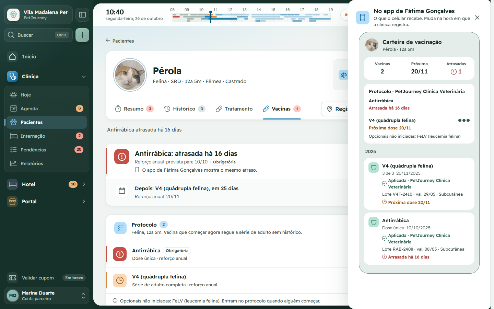
À direita, a prévia do app da responsável: o mesmo atraso, o mesmo protocolo. Quando a
clínica aplica, a carteirinha muda na hora.
O dono do animal anota em casa; a clínica lê em trinta segundos antes de abrir a porta do
consultório. E quando a clínica aplica a vacina, a carteirinha no celular dele muda na hora.
Por que isso vende. Continuidade de cuidado é o que justifica estar ligado ao app, e
nenhum concorrente tem o dono do animal do outro lado.
Prévia, não entrega. O celular desta tela é uma simulação do app: o que a clínica
faz aqui ainda não chega ao app real. Aplicar a vacina só funciona uma vez por carga, e os
sinais da Pérola somem depois que a consulta de hoje é finalizada.
C7
Internação
/veterinario/internacao2 min
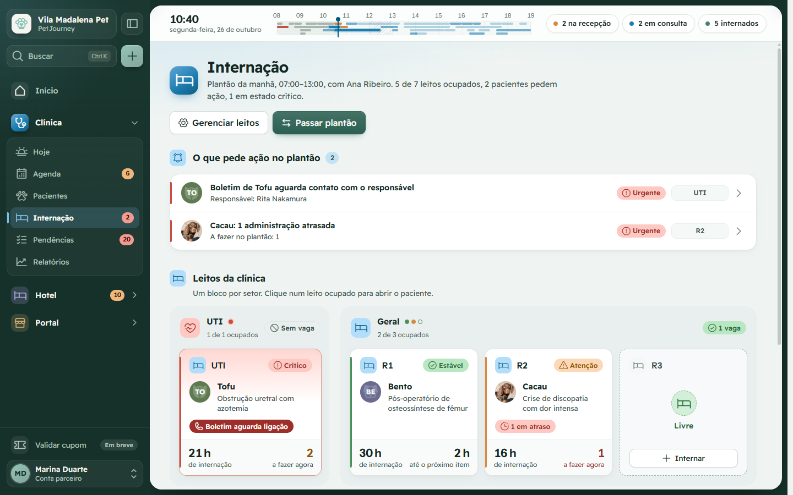
O plantão começa pelo que pede ação. Os leitos vêm por setor, a UTI primeiro, com o estado
de cada paciente e o que está a fazer agora.
Leia a frase do plantão e O que pede ação no plantão: o boletim do Tofu aguardando
ligação e a Cacau com uma administração atrasada.
Abra o Tofu (UTI): Resolver boletim retido →
Registrar ligação. Só então o boletim fica pronto para
enviar: notícia ruim não chega ao dono por mensagem antes de alguém ligar.
Abra a Cacau → Checklist: Checar Tramadol vira Feita · por Ana
Ribeiro.
Passar plantão: a passagem trava enquanto houver dose em cima
da troca de turno.
Internação é onde a clínica mais erra por cansaço. Aqui o plantão começa pelo que pede ação,
e notícia ruim nunca chega ao dono por mensagem antes de alguém ligar.
Atenção.
Entregar plantão muda o turno na hora: faça por último, se fizer.
Não carregue a tela nos 30 minutos antes das 7h, 13h ou 19h do relógio da demonstração.
Remover num leito vazio remove de verdade.
C8
Pendências que viram faturamento
/veterinario/vacinas2 min
Este é o ato comercial da clínica. Se o tempo apertar, corte outro, não este.
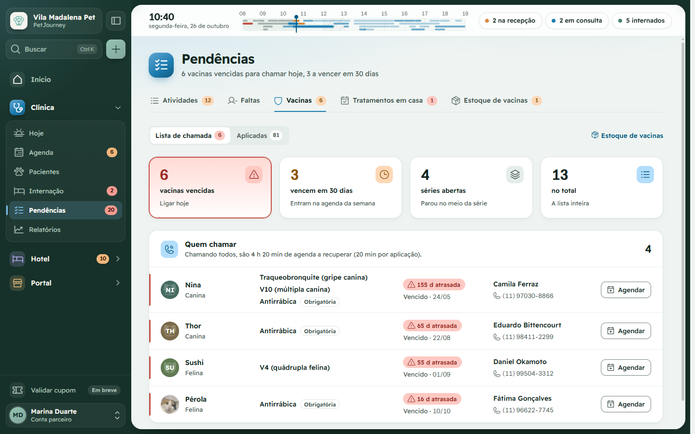
Vencidas, a vencer em 30 dias e séries abertas. Em "Quem chamar", o responsável, o
telefone e há quantos dias está atrasada.
Pendências → Vacinas.6 vacinas vencidas para chamar hoje, 3 a vencer em 30
dias, e as séries abertas: quem começou a série e não voltou.
Em Quem chamar, a frase diz quanto de agenda isso recupera. Cada linha tem o
telefone e Agendar.
Passe pelas outras abas: Atividades (o que ficou começado), Faltas
(reincidentes), Tratamentos em casa (a Duna parou o remédio: acabou) e
Estoque de vacinas (lote vencido, metas do mês, pedido de compra).
Esta tela não espera o cliente ligar. Cada linha aqui é um atendimento que a clínica já
ganhou e ainda não marcou.
Por que isso vende. É a tela que fala de receita, e a que fica na cabeça do dono da
clínica depois da reunião.
Atenção.Agendar abre a agenda sem o paciente escolhido. Em Tratamentos em
casa há um botão Ligar: não use; o jeito da casa é ligar pelo telefone e registrar o
contato na tela.
C9
Relatórios e a base que vem junto
/veterinario/resumo · /veterinario/paciente/importar2 min
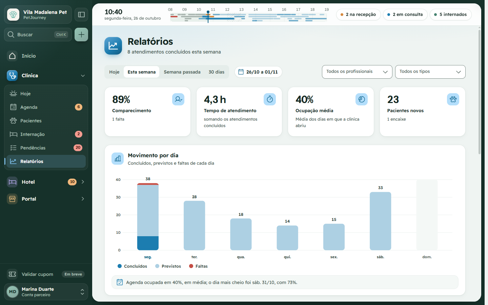
Comparecimento, tempo de atendimento, ocupação e movimento por dia.
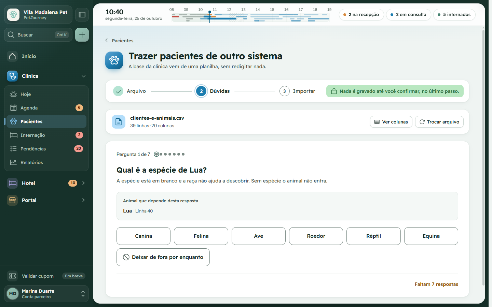
A planilha bagunçada de propósito: só pergunta o que não dá para deduzir.
Relatórios: comparecimento, tempo de atendimento, ocupação, movimento por dia,
horários de pico e de onde vêm os atendimentos (app, link, telefone). Na segunda-feira,
escolha Semana passada.
Pacientes → Trazer pacientes de outro sistema → em Não tem um arquivo agora?,
Usar este na Planilha feita na clínica. As colunas se
ligam sozinhas; ele só pergunta o que não dá para deduzir (Qual é a espécie de Lua?).
Aponte o selo: Nada é gravado até você confirmar, no último passo. Opcional: a
Base grande do Vetus, 2.400 linhas, com Pausar e Continuar.
A pergunta que sempre vem é: e o que eu já tenho? Vocês exportam do sistema de hoje,
SimplesVet, Vetus ou planilha, e trazem para cá sem redigitar.
Atenção. Não destaque "Pacientes novos" nos Relatórios: o número está inflado. O
importador lê o arquivo de verdade (.xlsx e .csv; o .xls antigo não), mas grava na camada
de demonstração.
Para hotel e creche · cerca de 15 minutos
Percurso Hotel
A história é um dia da casa: quem chega, quem está e quem sai; a rotina do turno; a
notícia para o dono que viajou; e a venda de uma vaga. Lembre: é protótipo com dados
de demonstração. Toda tela do hotel tem o botão Como usar, um tutorial dela
mesma.
H1 · Painel do dia1 min 30 s
H2 · A rotina do turno2 min
H3 · A proposta de rotina2 min
H4 · A estadia2 min 30 s
H5 · Vender uma vaga2 min 30 s
H6 · Reserva online2 min
H7 · Relatórios1 min
H1
Painel do dia
/hotel/painel1 min 30 s
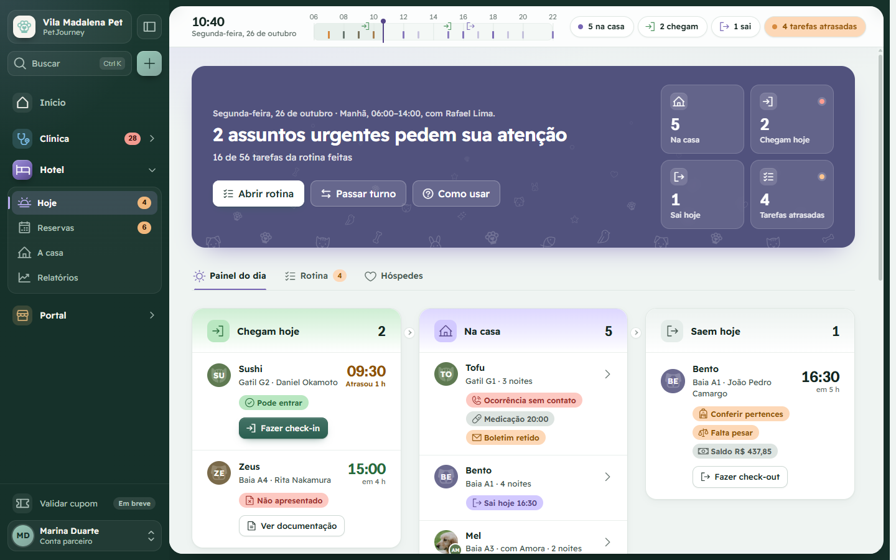
O turno e quem está nele, as tarefas feitas e três colunas: chegam, estão na casa e saem
hoje, cada um com o que falta.
Hotel → Hoje. A frase diz o turno e quem está nele (Manhã, 06:00–14:00, com
Rafael Lima) e quantas tarefas da rotina foram feitas.
Chegam hoje: Sushi Pode entrar, com Fazer check-in;
Zeus Não apresentado, falta documento. Na casa: o Tofu com ocorrência sem
contato. Saem hoje: o Bento, que falta pesar e conferir pertences.
No alto, a fita da casa: o dia inteiro, com chegadas, saídas e a marca de agora.
Quem chega, quem está e quem sai, e o que não pode esperar. Cada selo leva aonde se resolve.
H2
A rotina do turno
/hotel/rotina2 min
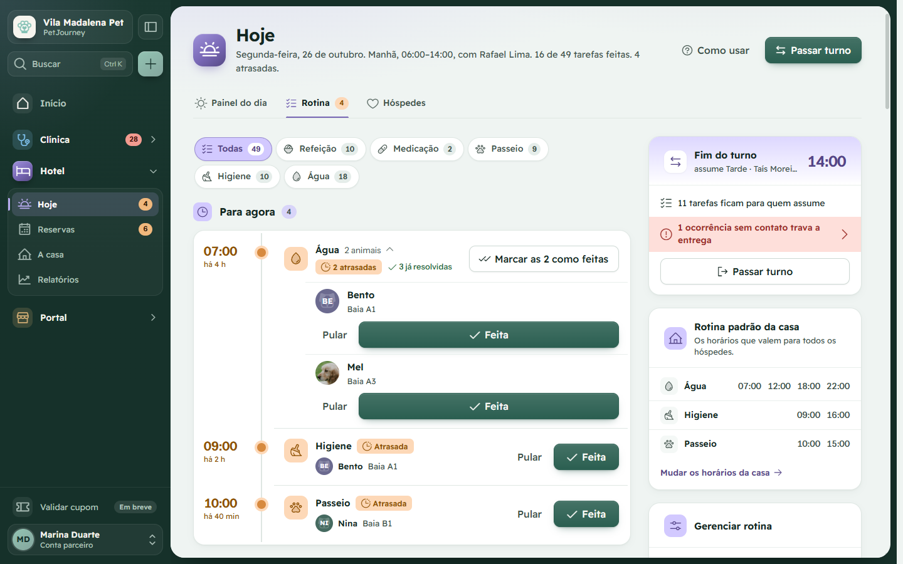
O atrasado em cima, a marca de agora, o que vem mais tarde. À direita, o fim do turno e o
que trava a entrega.
Aba Rotina: Para agora em cima, o fio Agora · 10:40, depois
Mais tarde hoje. Filtros por tipo: refeição, medicação, passeio, higiene, água.
Marque uma ronda inteira: Marcar as 2 como feitas. Remédio se
marca um a um. Refeição tem Recusou.
Fim do turno: quantas tarefas ficam para quem assume e o que trava a entrega.
Passar turno: a ocorrência do Tofu sem contato impede a passagem.
Rotina de hotel é lista de tarefa com hora. Aqui cada um vê o que é para agora, e o turno
não passa com pendência grave escondida.
Os horários da casa se mudam em A casa → Rotina padrão, com a prévia de
quantas tarefas nascem e saem antes de publicar. Vale mostrar se perguntarem.
H3
A proposta de rotina
/hotel/rotina, coluna "Gerenciar rotina"2 min
Em Gerenciar rotina, escolha o Tofu. A proposta aparece em três
partes: A casa já faz, Da ficha, Proponho mudar.
Leia os porquês: água extra às 15:00 porque ele chegou estressado; uma pesagem no meio
da estadia porque são 5 noites.
Nada vem marcado. A equipe escolhe, ajusta os horários e
Aprovar, ou Descartar.
A medicação aparece transcrita da receita: A casa não prescreve: para mudar
dose ou horário é preciso receita.
O sistema propõe a partir do que está registrado na ficha, e sempre diz por quê. Quem
decide é a equipe. Algumas sugestões são discutíveis de propósito: é para aprovar com
critério, não carimbar.
Por que isso vende. Mostra o desenho de como a inteligência entra no hotel sem
tirar a decisão de quem cuida do animal.
Diga a verdade. A própria tela avisa: Nesta versão não há modelo nem rede: a
proposta vem de uma simulação. O que é real é o fluxo de revisar e aprovar. Não
apresente como IA pronta.
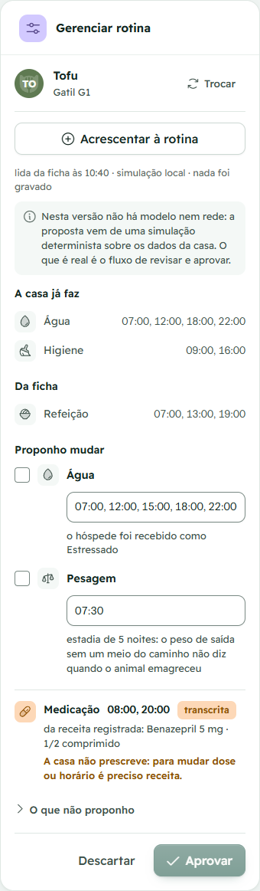
Proposta para o Tofu: cada mudança com o porquê, nada pré-marcado.
H4
A estadia
/hotel/hospedagem/hosp-tofu2 min 30 s
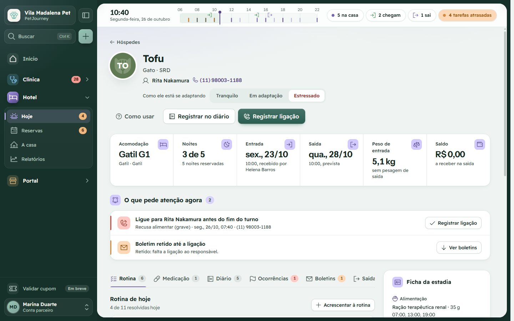
O rosto, o responsável, como ele está se adaptando, os números da estadia e o que pede
atenção agora: ligar antes de mandar boletim.
Abra o Tofu: responsável e telefone, Como ele está se adaptando
(Estressado), os números da estadia.
O que pede atenção agora: Ligue para Rita Nakamura antes do fim do turno e
Boletim retido até a ligação. Notícia ruim não vai por mensagem.
Para o boletim do dia, abra o Thor ou a Nina → Boletins →
Gerar boletim: o texto se monta com as refeições e o diário.
Enviar.
Check-out do Bento (Painel → Fazer check-out): falta
pesar e conferir um pertence; Quem está levando pede o documento de quem busca.
O dono que viajou quer notícia. O boletim se monta com o que a equipe registrou. E na saída,
o sistema não deixa esquecer a pesagem nem o brinquedo.
Não use o Tofu para mostrar o envio de boletim. Mesmo depois de
Registrar ligação, o boletim antigo dele continua retido. Enviar muda o
status, mas nada chega ao app ainda. Registrar ligação registra; não liga.
H5
Vender uma vaga
/hotel/mapa · /hotel/reserva/res-zeus2 min 30 s
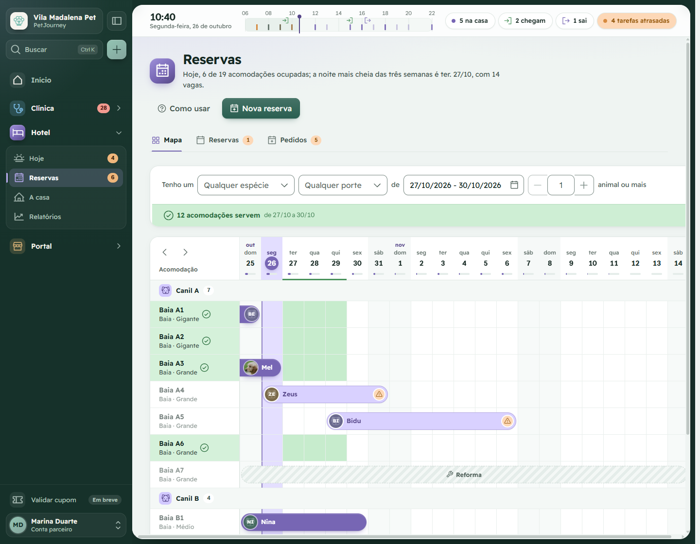
Três semanas, uma linha por acomodação. A procura em frase responde quantas servem; as
que servem ficam verdes.
Reservas → Mapa. A procura em frase: Tenho um [cão] [médio] de [datas]
responde 12 acomodações servem.
Clique numa célula livre ou em Nova reserva: noites,
horários, hóspede, serviços e o orçamento ao vivo (meia diária, temporada).
Criar reserva: nasce pendente.
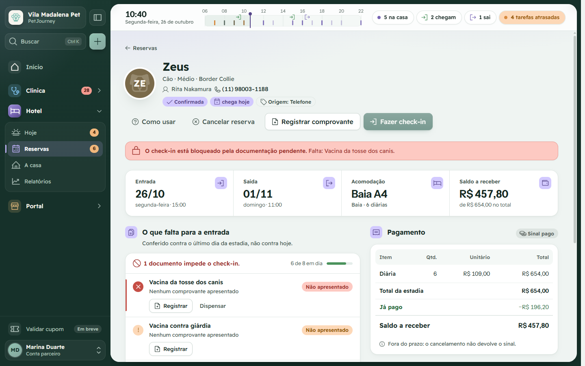
O Zeus chega hoje, mas o check-in está bloqueado: falta a vacina da tosse dos canis. A
validade é conferida contra o último dia da estadia, não contra hoje.
Abra o Zeus: O check-in está bloqueado pela documentação pendente.
Registrar o comprovante, ou
Dispensar com motivo e quem autorizou. O check-in acende.
Mostre o pagamento: diárias, sinal pago, saldo a receber.
A vaga é conferida contra as outras reservas e o tempo de limpeza. E bicho sem vacina não
entra por descuido: a reserva trava até alguém registrar o comprovante ou assumir a dispensa.
Atenção.
Não faça check-in numa reserva futura (o Bidu): o botão aceita e faria a entrada hoje.
O sinal é registrado, não cobrado.
Pet novo não se cadastra no balcão do hotel: a reserva usa pets já cadastrados.
H6
Reserva online
/hotel/pedidos · /reservar/petjourney-hotel2 min
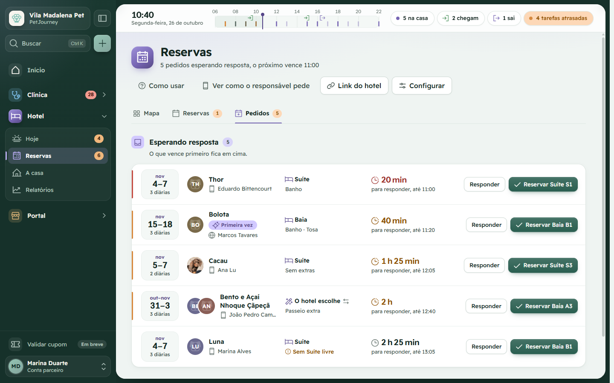
Quem quer se hospedar, pelo prazo de resposta. Cada linha já sugere onde cabe:
Reservar Suíte S1.
Reservas → Pedidos: em ordem de prazo (20 min para responder). O Bolota
veio pelo link, Primeira vez.
Na linha, Reservar Suíte S1 grava a reserva.
Responder abre a gaveta para escolher outra vaga ou recusar com
a mensagem pronta.
Link do hotel → Abrir a página
(na mesma aba): porte, datas, acomodação com N livres e preço aproximado, extras,
dados.
Ver como o responsável pede: o celular simulado mostra o
pedido saindo e a resposta chegando.
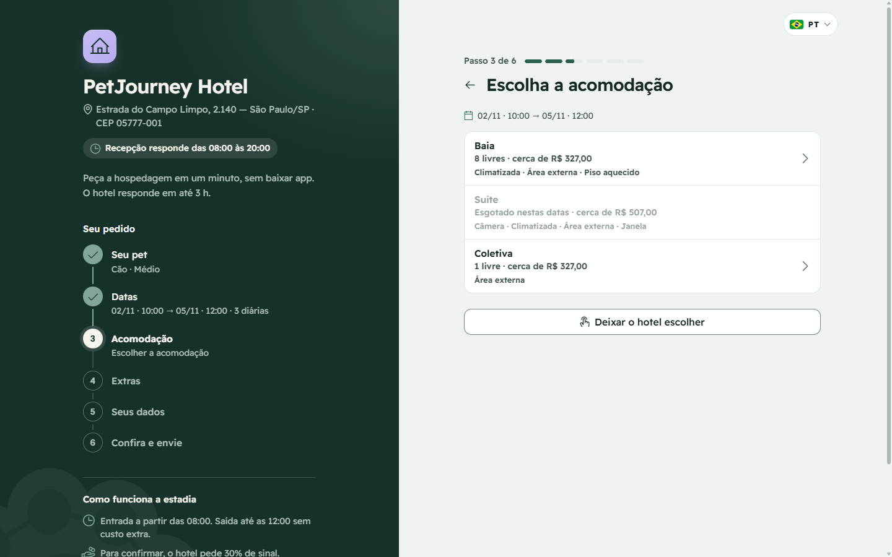
A página pública do hotel: sem app, o dono escolhe as datas e vê o que está livre, com o
preço aproximado. O hotel confirma.
O hotel vende de madrugada: o dono escolhe as datas e a acomodação, vê o preço aproximado,
e vocês respondem dentro do prazo. Quem não tem o app usa o link.
Atenção. À noite, os prazos pulam para a manhã seguinte e nada aparece vencendo.
Abra a página pelo botão, nunca em aba nova: lá o pedido não chega à caixa.
H7
Relatórios
/hotel/resumo1 min
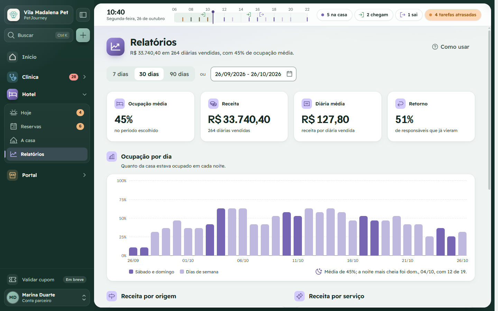
Os últimos 30 dias: ocupação, receita, diária média e retorno, e a ocupação de cada
noite, com o fim de semana destacado.
Ocupação média, receita, diária média e retorno; a ocupação por dia; desça para a
receita por origem e por serviço e as perdas por cancelamento e não comparecimento.
No fim do mês, a pergunta é se valeu a pena. A resposta está aqui, e de onde veio a receita.
Os números são de um histórico gerado para a demonstração: não são resultado de
cliente.
Para pet shop, banho e tosa, adestramento e farmácia · cerca de 5 minutos
Percurso Rede
Para quem não usa Clínica nem Hotel. O tronco já mostrou o essencial, Acessos e
Divulgação. Aqui você aprofunda o que a empresa ganha por estar na rede. Tudo neste
percurso é real, ligado ao servidor.
R1 · Programas1 min 30 s
R2 · A anotação de banho e tosa2 min
R3 · O que vem: cupom30 s
R1
Programas
/parceiro/programas1 min 30 s
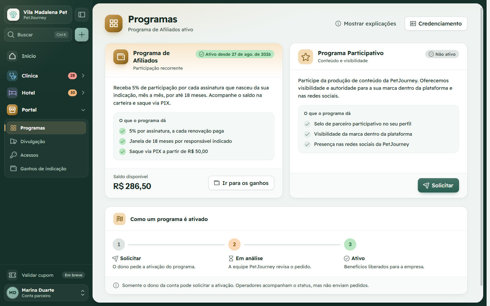
Dois jeitos de participar da rede e como um programa é ativado: solicitar, a equipe
PetJourney analisa, ativo.
Programa de Afiliados: participação recorrente, 5% por assinatura, janela de 18
meses por responsável indicado, saque via PIX a partir de R$ 50.
Programa Participativo: selo de parceiro, visibilidade dentro da plataforma e
presença nas redes sociais da PetJourney.
Como um programa é ativado: Solicitar → Em análise → Ativo.
Credenciamento leva ao cadastro da empresa.
A empresa entra na rede e escolhe como quer participar; a equipe PetJourney aprova. No
afiliado, vocês ganham por cliente que trazem. No participativo, ganham vitrine.
Só o dono solicita. A equipe vê o estado, mas não pede. Use o texto desta tela para o
Participativo: no formulário de cadastro ele aparece descrito de outro jeito.
R2
A anotação de banho e tosa
/parceiro/acessos → um pet com serviço Banho2 min
Abra um acesso de banho. Se vence hoje, a barra de Expira em está âmbar.
Leia as alergias e o tratamento contínuo antes de tudo: é o que muda o
produto e o manejo.
Em Nova anotação, escolha banho ou tosa: produtos usados, condição de pele
e pelo, comportamento. Anexe até 3 fotos.
Registrar anotação: vai para o histórico do pet no app do dono.
O dono sabe o que foi usado no banho e como estava a pele, e isso fica no histórico do pet,
que ele leva para onde for.
Por que isso vende. Pet shop vira parte do cuidado, não só do serviço. É o que
diferencia de quem só dá banho.
R3
O que vem: cupom
barra lateral, "Validar cupom · Em breve"30 s
Aponte o Validar cupom, no pé da barra lateral: o dono do animal gera o código de
desconto no app e a empresa valida no balcão.
Está marcado "Em breve". Não prometa data, nem o tamanho do desconto. Anote se a
empresa se interessa: é informação útil para a equipe.
Para todos · 1 minuto
O fecho
Feche olhando para a pessoa, não para a tela. Termine com uma pergunta, não com um resumo.
O que vocês viram é um dia de trabalho num lugar só, ligado ao dono do animal: [repita em
uma frase os dois momentos que mais acenderam a pessoa]. Queria entender qual dessas coisas
resolveria mais problema para vocês hoje.
Por que isso vende. A resposta dela define a proposta. Anote as palavras exatas.
Próximo passo, se fizer sentido
A empresa cria a conta no portal e preenche o cadastro (categoria, CNPJ, telefone).
A equipe PetJourney analisa e aprova o credenciamento.
O dono escolhe o programa, Afiliados ou Participativo, e começa a indicar.
Para Clínica e Hotel, o próximo passo é outro: entrar na conversa sobre o que construir
primeiro. Use o que a pessoa disse no fecho.
Perguntas que o cliente vai fazer
As mais comuns, com a resposta curta. Responder com segurança vale mais que qualquer tela.
Pergunta
Resposta
"Isso já funciona ou é maquete?"
O Portal do parceiro funciona de verdade, ligado ao servidor. Clínica e Hotel são
telas funcionando sobre dados de demonstração: a fase é validar com empresas antes de
ligar ao servidor. Nada do que fazemos nelas aqui é gravado.
"Quanto eu ganho indicando?"
5% de cada assinatura paga por quem entrou pela indicação, a cada renovação, por 18
meses desde a primeira assinatura. Cada crédito libera em 14 dias. Saque por PIX a
partir de R$ 50; pedido até o dia 27, pago até o dia 5.
"E o cupom de desconto?"
Está em breve. Não há data nem regra para prometer: anote o interesse.
"Quanto custa?"
Fora do escopo da demonstração. Encaminhe para a conversa comercial; não improvise preço.
"Meus dados ficam onde? E a LGPD?"
No que é do dono do animal, ele decide o que compartilha, por quanto tempo, e pode
retirar. A lista de acessos não mostra dado pessoal dele, e as leituras do QR não
guardam IP. Sobre a infraestrutura: anote e leve à equipe técnica.
"Importa meus dados do sistema atual?"
O importador lê .xlsx e .csv de verdade (SimplesVet, Vetus ou planilha) e pergunta só
o que falta. Hoje grava na camada de demonstração. Anote qual sistema eles usam.
"Tem inteligência artificial?"
A leitura de receita por foto, nos Acessos, funciona ligada ao servidor. A escuta da
consulta e a proposta de rotina do hotel são protótipos que mostram o fluxo: a máquina
sugere, cita a fonte, o profissional aprova.
"O dono do animal recebe a receita e o boletim no celular?"
A anotação feita em Acessos chega ao app. Na Clínica e no Hotel, a tela já mostra como
o dono vai ver, e o envio fica registrado; a entrega pelo app está em construção.
"Funciona no celular?"
O portal é feito para computador e tablet: recepção, consultório, canil, internação. O
celular é o lado do dono do animal, no app.
"Minha equipe pode usar?"
Há o dono e a equipe: só o dono pede programas, cadastra o PIX e saca. Quem opera mais
de uma empresa troca pelo menu da conta. O convite de equipe pela tela ainda não está
liberado.
"Quantos profissionais e salas?"
A agenda é por profissional e por sala, ao mesmo tempo. A demonstração tem cinco veterinários.
"Emite nota fiscal? Cobra o cliente?"
Não. O sinal do hotel é registrado, não cobrado.
"Quando fica pronto?"
Não dê data. Diga que a fase é ouvir empresas, e que a opinião deles entra no que será
construído primeiro. É verdade, e é o melhor convite possível.
O que é real e o que é demonstração
Esta seção protege quem apresenta. Prometer o que não existe custa a próxima reunião.
Portal · real, no servidor
Entrada, cadastro, esqueci a senha
Credenciamento da empresa
Programas e a solicitação
Código, link, QR e leituras
Acessos: vincular, ler, anotar
Ler receita com IA
Ganhos, extrato, PIX e saque
Seis idiomas, tema claro e escuro
Troca de empresa
Clínica · funciona na tela
Agenda: encaixe, bloqueio, arraste com confirmação, conflitos, desfazer
Pedidos online, página pública, fila de espera
Prontuário com salvamento automático
Faixas de referência, conta da dose, alergia por princípio ativo
15 documentos em A4
Vacinas com lote e validade; lista de chamada; estoque e metas
"Enviar ao responsável", "Liberar", boletins enviados
Registram a data e o status. A entrega pelo app ainda não está ligada.
Avisos de remarcação e oferta de vaga
O texto fica como comprovante. Nenhuma mensagem sai.
Celular simulado, carteirinha e adesão "no app"
É uma prévia na tela. O que a clínica faz não chega ao app real.
Assinatura e código de verificação da receita
Código provisório. Virará assinatura digital.
Escuta da consulta
Consulta de demonstração e regras locais, sem modelo de IA.
Proposta de rotina do hotel
Simulação a partir da ficha, sem modelo. O fluxo de aprovar é o real.
Sinal da reserva
Registrado, não cobrado.
Não existe: não prometa
Servidor para Clínica e Hotel. Tudo roda no navegador; recarregar recria o mundo.
Nota fiscal e pagamento.
Interação automática entre remédios: o bulário tem o texto, não o cruzamento.
Cupom de desconto e convite de equipe pela tela: em breve.
No hotel: creche (day use), câmera ao vivo, oferta automática à lista de espera, cadastro de pet novo no balcão.
Plano B
Quando algo não responde. Siga em frente com calma: quase tudo se resolve em um clique.
Se acontecer
Faça
O menu não tem Clínica nem Hotel
Os módulos estão desligados. Acrescente ?clinico=on&hotel=on ao endereço.
Hoje e Agenda abrem vazios ou estranhos
É fim de semana ou fora do horário. Diga que a demonstração simula um dia útil e vá ao
Hotel, que não depende do dia da semana. Na Agenda, um dia útil abre pelo endereço
?data=AAAA-MM-DD.
O prontuário diz "Não foi possível carregar"
A página foi recarregada. Abra de novo pela lista: Pacientes → Atendimentos.
Início ou Portal em "Não foi possível carregar"
Rede ou servidor. Tentar novamente. Se persistir, siga
para Clínica e Hotel, que rodam sem servidor, e mostre o Portal pelas capturas deste
documento.
"Programa afiliado necessário" ou "Portal ainda não liberado"
A conta não está aprovada ou sem afiliado ativo. Menu da conta → Trocar de empresa para a de demonstração.
Acessos está vazio
Nenhum pet compartilhado, ou o acesso venceu. Mostre o Histórico, ou gere um código no app e vincule ao vivo.
O que você fez sumiu
Houve recarga e os dados de demonstração renasceram. Siga, sem comentar.
O pedido da página pública não chegou à caixa
A página foi aberta em outra aba. Refaça pelo botão Abrir a página.
A gravação da consulta não ouve nada
Em Ouvir, escolha Consulta de demonstração.
Errou um arraste na agenda
Desfazer na faixa (8 segundos) ou a tecla Z.
Abriu um painel com chave inglesa e números
É o painel de desenvolvimento. Feche: não é para o cliente.
A tela aperta no projetor
Recolha a barra lateral (botão ao lado do nome da empresa) ou baixe o zoom para 90%.
Cola: endereços e nomes
Para digitar sem procurar, e para falar dos casos pelo nome.
Portal
Início
/inicio
Acessos
/parceiro/acessos
Divulgação
/parceiro/divulgacao
Ganhos de indicação
/parceiro/carteira
Programas
/parceiro/programas
Configurações (idioma, tema)
/settings
Clínica
Hoje
/veterinario/meu-dia
Agenda · Pedidos · Fila
/veterinario/agenda · /pedidos · /fila
Atendimento da Nina
/veterinario/atendimento/enc-apt-alergia
Pérola: resumo e vacinas
/veterinario/paciente/pet-perola/resumo
Internação · Tofu
/veterinario/internacao · /internacao/int-tofu
Vacinas a chamar
/veterinario/vacinas
Relatórios
/veterinario/resumo
Importar base
/veterinario/paciente/importar
Página pública
/agendar/petjourney-vila-madalena?clinico=on
Hotel
Painel · Rotina · Hóspedes
/hotel/painel · /rotina · /hospedes
Estadia do Tofu
/hotel/hospedagem/hosp-tofu
Mapa · Pedidos
/hotel/mapa · /hotel/pedidos
Reserva do Zeus
/hotel/reserva/res-zeus
Rotina padrão · Acomodações
/hotel/rotina-padrao · /acomodacoes
Relatórios
/hotel/resumo
Página pública
/reservar/petjourney-hotel?hotel=on
A clínica de demonstração
PetJourney Clínica Veterinária, Vila Madalena, São Paulo. Ana Ribeiro (clínica
geral), Caio Nogueira (cirurgia), Helena Vasconcelos Prado (dermatologia), Tiago Sá
(cardiologia), Márcia Do Espírito Santo Albuquerque (anestesia).
Nina · Camila Ferraz
Alergia a dipirona, quimioterapia; a consulta das 16:00 (C4).
Pérola · Fátima Gonçalves
Perda de peso no diário, antirrábica atrasada (C6).
Tofu · Rita Nakamura
UTI, boletim retido até a ligação (C7).
Cacau · Ana Lu
Internada, dose atrasada (C7).
Duna · Eduardo Bittencourt
Parou o remédio em casa (C8).
Amora
Pré-consulta respondida no app (C4).
Thor
Encaixe das 16:20 por cima do bloqueio (C2).
O hotel de demonstração
PetJourney Hotel, São Paulo. Turnos: manhã com Rafael Lima, tarde com Taís
Moreira, noite com Caio Prado.
Tofu · Rita Nakamura
Estressado, ocorrência sem contato, boletim retido (H2–H4).